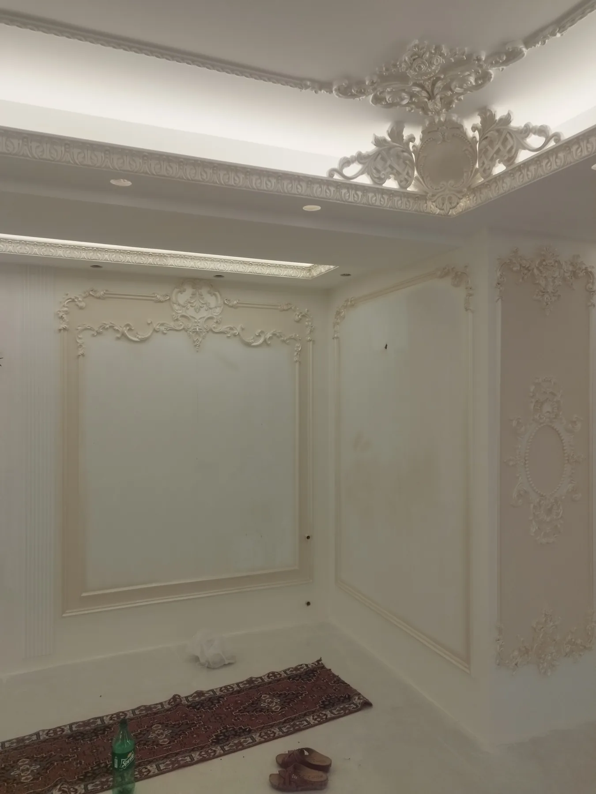

گچبری دکوراتیواستودیو معماری شاهرخ خانلی
همه محصولات
DECORATIVE PLASTERWORK
گچبری
نمونه پروژههای اجرایی گچبری دیوار و سقف، قاببندی مدرن، ابزارهای دکوراتیو و جزئیات کلاسیک.
۲۲ پروژه · ۱ آرشیو محصول · ۴۲۹ تصویرSELECTED PROJECTS
پروژههای گچبری
عکسهای مشابه در یک پروژه قرار گرفتهاند. برای مشاهده جزئیات و گالری کامل روی هر کارت کلیک کنید.